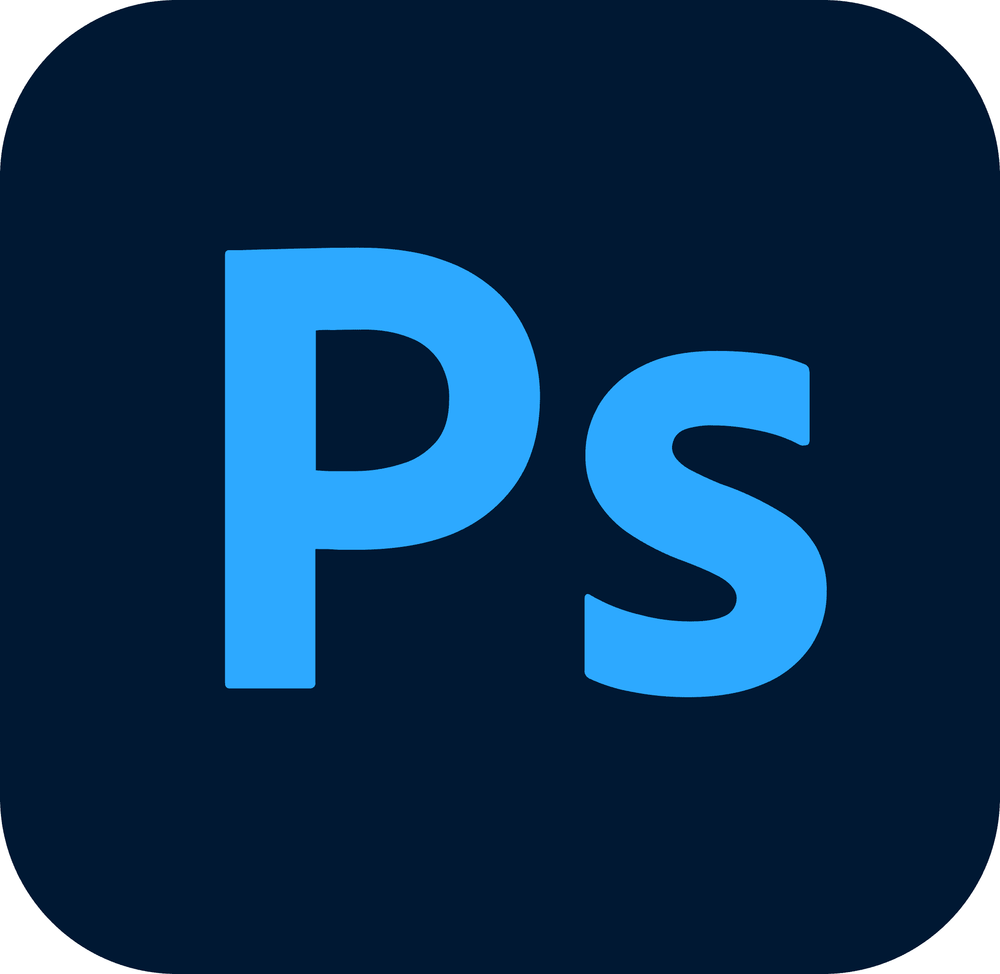
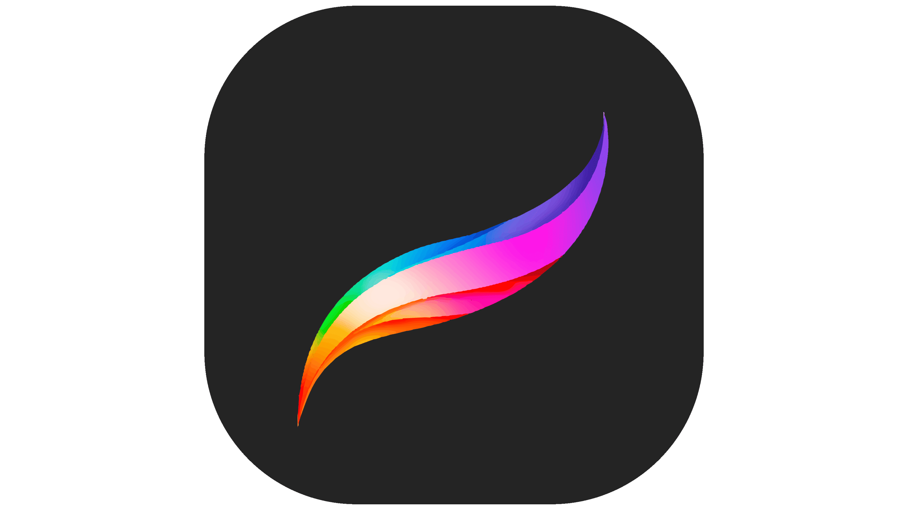
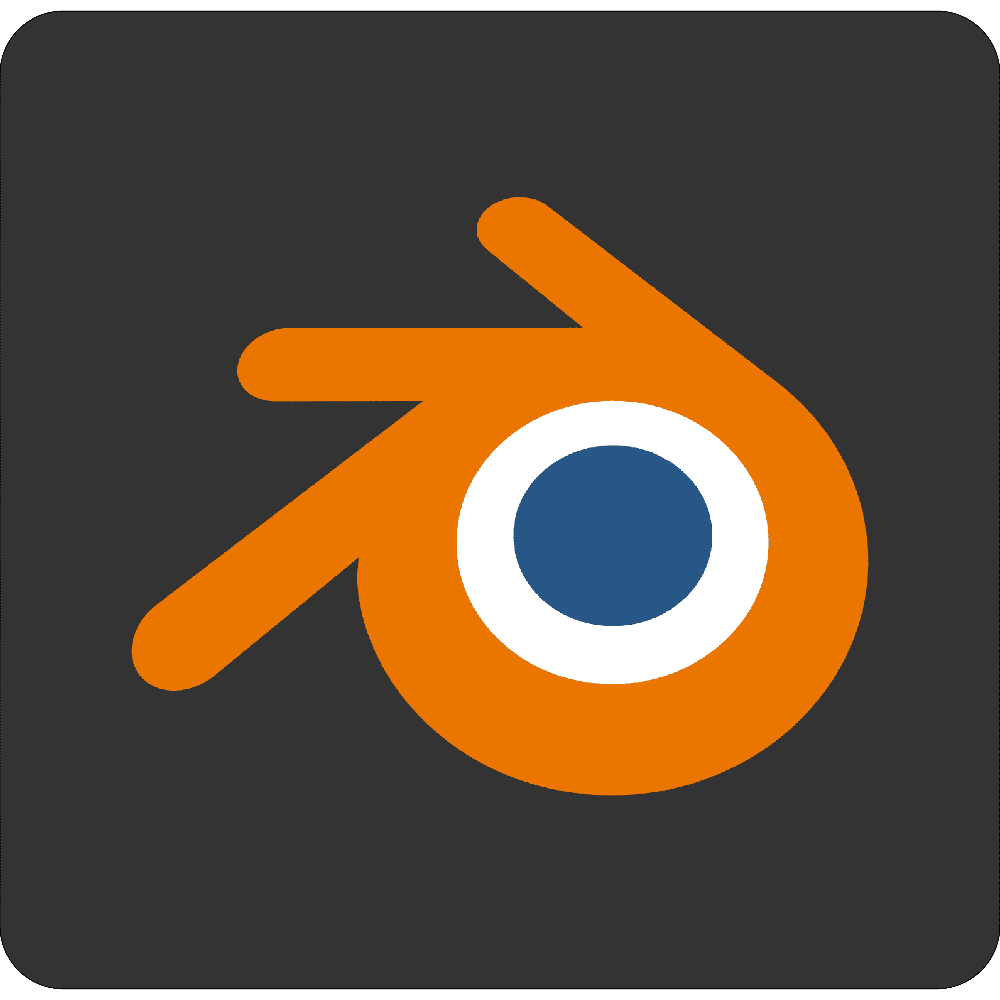
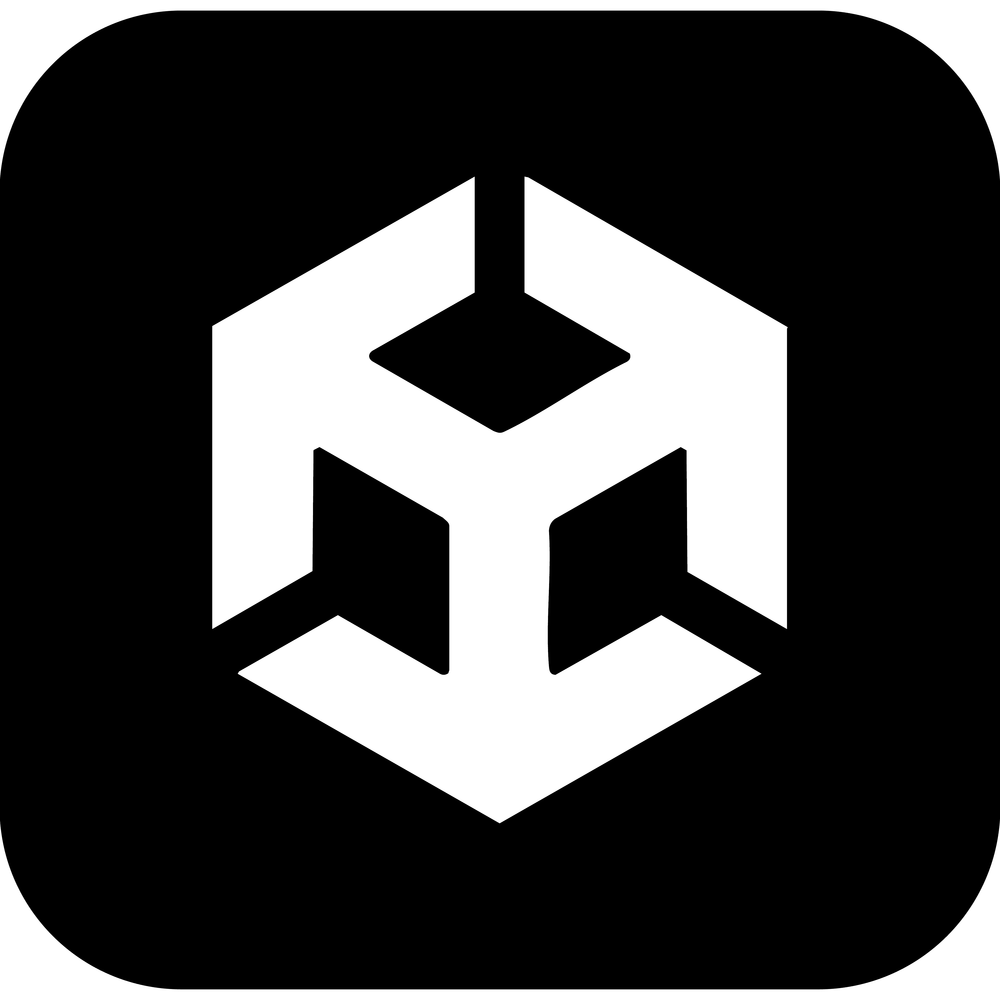
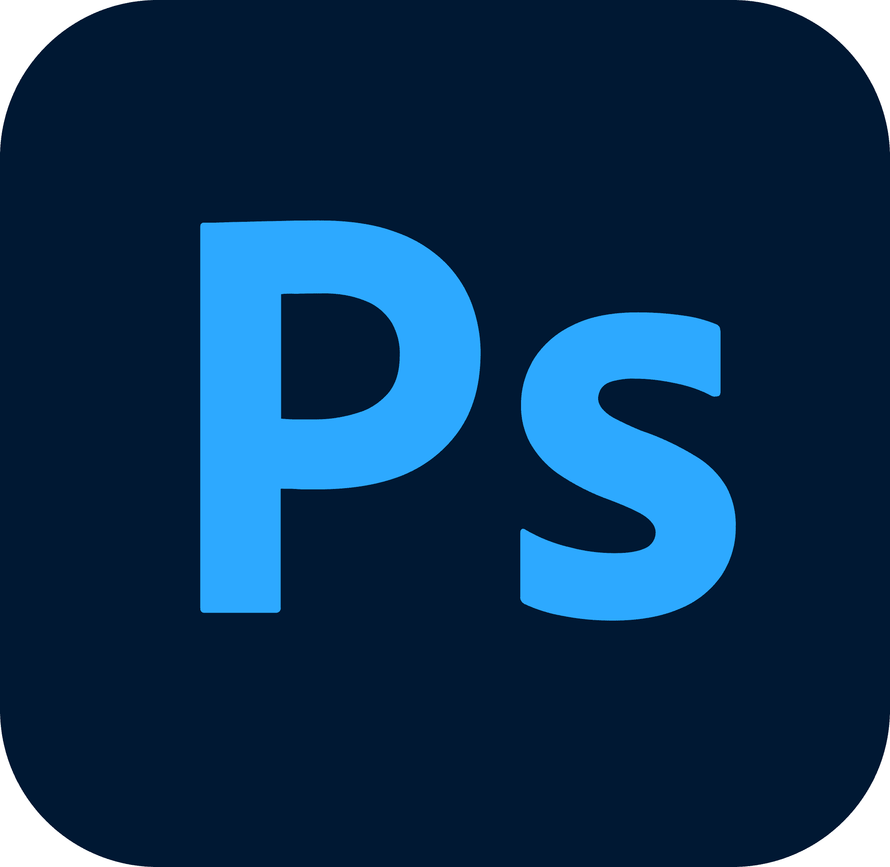
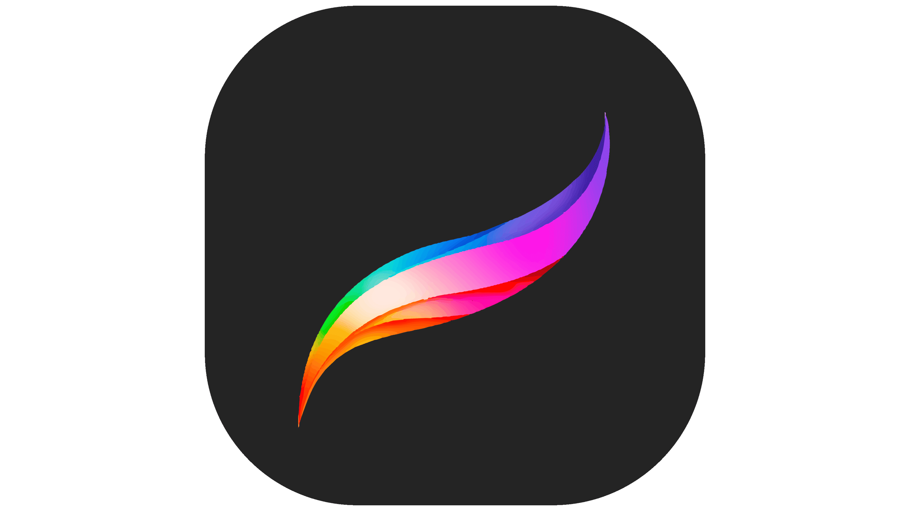
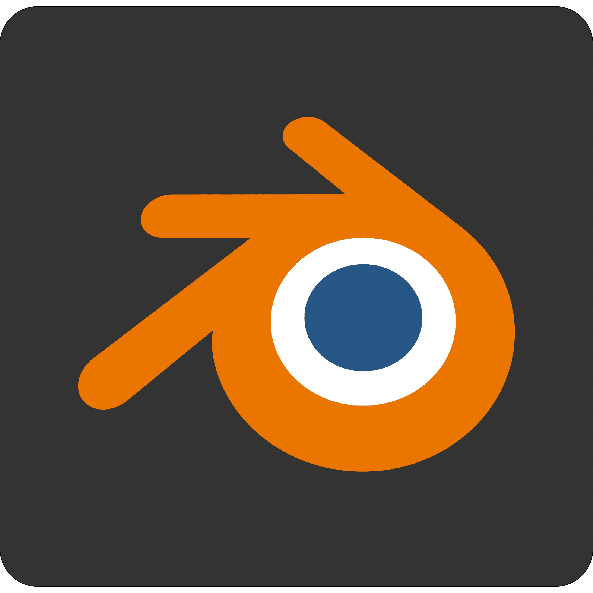
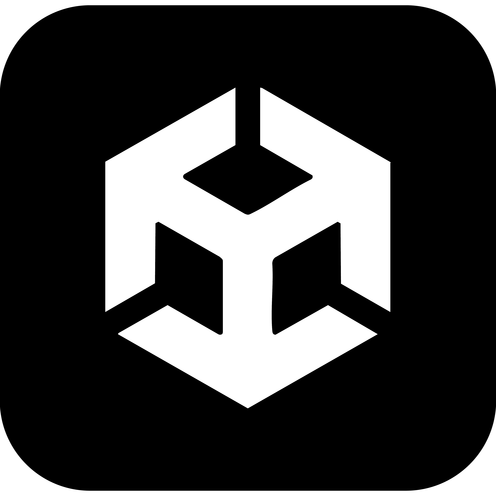

Educación & Experiencia
Educación
- 2019–2023 · Grado en Bellas Artes — UPV
- 2023–2024 · Máster IFAB de Tecnologías Interactivas y Fabricación Digital — UPV
- 2024-2025 · Curso “Emprendimiento con éxito, según la metodología de MIT” - Las Naves
- 2025 · Programa Emprendimiento en Videojuegos Valencia FSE + Coworking
Experiencia
Actualmente, formo parte de un equipo de desarrollo donde estamos creando una experiencia de Realidad Virtual que explora la cultura y tradición de las Fallas de Valencia.
Un poco más sobre mí
Idiomas
- Español
- Valenciano/Catalán
- Inglés
Soft skills
- Dirección de arte
- Comunicación visual
- Organización
- Resolución creativa
- Desarrollo empresarial
- Adaptabilidad
- Capacidad de aprendizaje